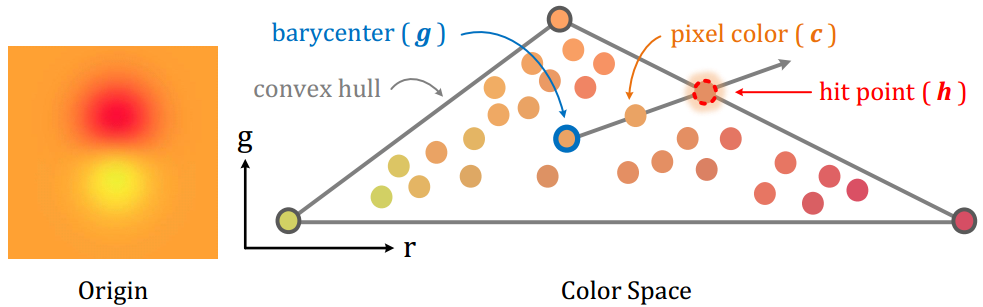

简介
本文为 TOG 2020 论文 Generating Digital Painting Lighting Effects via RGB-space Geometry 阅读笔记。
光照效果对于数字绘画十分重要，它使得二维的绘画具有一定的立体感，增强了视觉体验。而对于艺术家来说，为绘画添加合理自然的光照效果并不容易，往往要消耗大量的时间精力。为此，这篇论文中提出了一种仅需单张图像即可生成优质的光照效果的方法，且没有使用深度学习，故无须繁杂的训练过程，同时这个方法还可以为照片等自然图像生成光照效果。
方法
论文的方法模仿了艺术家的工作流程：首先估计笔画密度，然后生成粗糙的光照效果图，最后使用笔画密度精化粗糙的光照效果。该方法基于了一个关键的假设：笔画密度高的地方往往具有更多的光影效果，而笔画密度低的地方则相反。
笔画密度估计
假设有 $n$ 个笔画颜色 $\mathcal{C}=\lbrace c_1,…,c_n\rbrace$ 以及混合系数 $\mathcal{A}=\lbrace\alpha_1,…,\alpha_n\rbrace$，那么这些笔画混合后的颜色为：
然后将笔画密度 $k$ 定义为：
显然当所有颜色均等（即 $\alpha_i=\frac{1}{n}$）混合时 $k=1$，而仅有一个 $\alpha_i \neq 0$ 时 $k=0$，进一步可以发现 $k$ 随着混合的颜色数量的增加而增加。
为了估计笔画密度 $k$，论文构造了一个调色板，这样一来图像中的所有颜色都可以看作是调色板中颜色的混合。论文中使用了基于凸包的调色板，因为凸包的性质有助于简化笔画密度估计，且实际应用中效果较好。这个作为调色板的凸包 $\mathcal{M}$ 是图像中所有颜色在 RGB 空间里的凸包。从 $\mathcal{M}$ 上取 $n$ 个点 $\lbrace c_1,…,c_n\rbrace$，得到均匀混合后的颜色 $g=\frac{1}{n} \sum_{i=1}^n c_i$，当 $n\rightarrow +\infty$ 时，$g$ 即为 $\mathcal{M}$ 的重心。

如上图所示，估计颜色 $c_p$ 的笔画密度时，从 $g$ 向 $c_p$ 发射一条 RGB 空间的射线，与 $\mathcal{M}$ 相交于 $h_p$，这样 $c_p$ 可以表示为：
若 $n\rightarrow +\infty$，代入笔画密度 $k$ 的表达式，化简后即可得到 $k_p=\frac{\vert c_p-h_p \vert}{\vert g-h_p \vert}$。
生成光效
为了避免高频噪声的影响，首先使用一个高斯滤波 $\rho(\cdot)$ 保留图像的低频部分，然后对图像通道 $R_c$ 进行归一化得到：
同时经过高斯滤波还可以使得相邻部分的颜色相互影响，产生一定的光线多次反射的效果。
论文中对于生成粗糙光效图的方法描述得较为晦涩，这里我们提供另一种相对简单的理解方式，它可以取得与论文中十分接近的效果。光照图使用了漫反射的 Lambert 光照模型，即出射光 $L_o$ 与入射光 $L_i$ 的关系为 $L_o = L_i (n\cdot\omega_i)$，其中 $n$ 是表面法向、$\omega_i$ 是入射光方向。对于入射光方向，我们很容易可以得到，假设点光源位置为 $(l_x,l_y,l_z)$，图像上一点位置为 $(p_x,p_y,0)$，则入射光方向为 $\frac{(l_x-p_x,l_y-p_y,l_z)}{\vert (l_x-p_x,l_y-p_y,l_z) \vert}$。对于表面法向，我们假设 $N_c$ 是一个曲面 $z=f_{N_c}(x,y)$，则其法向为 $(-\frac{\partial f_{N_c}}{\partial x},-\frac{\partial f_{N_c}}{\partial y},1)$，其中偏导数可以使用 Sobel 算子进行近似。综上，粗糙光效图 $E_c$ 可以计算为：
使用笔画密度 $K$ 对 $E$ 进行精细化，得到精细的光效图 $S$：
其中 $\gamma$ 表示入射光亮度，而 $O$ 表示环境光亮度。将 $S$ 应用到原始图像 $R$ 上即得到最终的带有光照效果的图像 $I=R\odot S$。
实现
凸包的计算可以使用 scipy.spatial.ConvexHull，而射线与凸包求交可以暴力枚举计算，因为凸包的面数与输入颜色点数量之间是对数级的关系，这里可以使用 taichi 进行并行加速。实现代码详见GitHub。
下面展示一组效果图：
| 输入图像 | 笔画密度 | 精细光效 | 最终效果 |
注意：笔画密度图中深色表示笔画密度高。